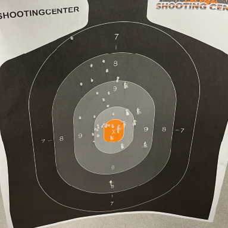

Las Vegas is famous for its incredible dining scene. From top-notch
steak houses like Hakkasan to mouthwatering yet affordable meals on
Fremont Street, there's something for everyone. Surprisingly, many
people who aren't into gambling come to Las Vegas just for the food.
It's no wonder since the city boasts one of the largest concentrations
of restaurants and eateries in the world. New places are popping up all
the time, attracting crowds of food lovers. Prices are usually
reasonable, but if you're looking for high-end cuisine, Vegas has got
you covered. You can indulge in delights like the Caviar Bar at Resorts
Worlds or savor a meal at Nobu within the Bellagio's Nobu Hotel. With my
frequent visits to Las Vegas over the past five years, I've explored
most of the upscale options. However, there was still one place I was
excited to try this time for an extravagant dining experience with my
friends. Since we only had four nights, we decided to allocate two of
them for unforgettable high-end dinners at new and exciting spots. Our
choices were Morimoto, led by Iron Chef Masaharu Morimoto, and CATCH,
run by Chef Michael Mina. In this travelogue, I'll focus on my time at
Morimoto as there's not enough space to do justice to both places.
Morimoto can be found inside the MGM Grand Hotel, right in the heart of
the Las Vegas strip. It's the crème de la crème of dining experiences at
MGM Grand and has been serving guests since 2016. The restaurant itself
is a stunning blend of classic Japanese vibes and sleek modern design.
If you're planning to dine there, make sure to book a month in advance
because it gets crazy busy. Getting a table for four on short notice is
a long shot.
Now, let's
talk about the food. Morimoto's menu is a delightful mix of Japanese and
Western flavours, offering something for every palate. The service was
on point from the moment we walked in. This time, I decided to take our
friendly waiter's suggestions, and boy, did he deliver. He promptly
brought us our drinks—Fiji water for me and a generous pour of Rémy
Martin Louis XIII Cognac, which was hands down the best cognac I've ever
tasted. It was light, packed with flavour, and had hints of honey, plum,
figs, and leather. Trust me, you've gotta try it. It went perfectly with
my appetizer, the Blue Fin Toro Tartare. It was served with wasabi, nori
paste, sour cream, and sturgeon caviar, and the whole thing was
presented on an icy dish to keep the tartare at its best, considering
its high fat content. I savored every bite—it was simply delicious. For
the starters, I couldn't resist ordering two slices of Blue Fin Oh-Toro
Sashimi and a Blue Fin Negitoro roll. Let me tell you, they were worth
every dollar. But the real star of the show was the main course—the
waiter's recommendation. I went for the 5-ounce A5 Kagoshima Certified
Wagyu Steak, cooked to a perfect medium-rare. I can't even put into
words how incredible it was. Forget any other cut of meat you've ever
had—this was on a whole new level. In fact, all four of us at the table
went for the Wagyu, and we left feeling beyond satisfied. Sure, it's on
the pricier side, but trust me, the experience is worth every single
dollar. If you find yourself in Las Vegas, I highly recommend paying a
visit to Morimoto. Just keep in mind that dinner here can set you back
anywhere from $200 to $500 per person, depending on your choices. And if
you're up for trying the A5 Kagoshima Wagyu, be ready to go beyond the
$500 mark. It's a splurge, but one you won't regret.
The Drinks
Las Vegas is famous for its incredible variety of drinks and cocktails,
making it a paradise for drink connoisseurs. Here's a little insider
tip: while you're gambling, you can actually get free drinks, from beer
to fancy reposado tequila, it's all on the house as long as you're
playing at the major casinos. It's a different story in Canada, where
there are rules against giving out free alcohol to encourage gambling,
but in Las Vegas, there are no such restrictions. So, every casino on
the Strip offers this awesome perk. Now, when it comes to the drink
service, it can vary depending on where you are. At fancy spots like the
Cosmopolitan or The Venetian, the service is lightning-fast. The
waitresses practically whisk away before you even have a chance to tip
them. On the other hand, at more budget-friendly places like New York
New York or The Flamingo, the service tends to be slower, and it's not
as common to see waitresses taking drink orders. The best drink service
I've experienced is at The Resorts World Casino. Not only do the drinks
arrive quickly, but the waitresses there are incredibly knowledgeable,
and they will actually recommend drinks based on your preferences.
Here's a little trick: if you want the waitresses to keep coming back,
make sure to tip them well. A couple of bucks per drink order—around
$2-$3 dollars—is usually enough to have them constantly checking on you.
So, even if you're a slow drinker like me, you might end up with a few
drinks at once. This is something that many non-gamblers aren't aware
of, but it's a little secret I take advantage of every time I'm in
Vegas. I've even enjoyed free Strawberry Daiquiris and treated myself to
shots of Patron Reposado, which is usually a bit pricey at regular
bars—like, $12 to $19 dollars per shot.
If you're not a big fan of gambling or slot machines and prefer to pay
for your drinks while enjoying a more relaxed or alternative atmosphere,
Las Vegas has got you covered with its numerous bars and lounges. Every
casino has multiple options, offering a range of vibes from calm and
laid-back to wild and energetic. While I'm not really into the whole
party scene, I can suggest a couple of cool spots like the Marquee
Nightclub & Dayclub at the Cosmopolitan and Zouk at The Resorts World.
Personally, I'm more into lounges where you can have a chat with your
friends and indulge in high-quality drinks. I don't drink to get drunk;
I genuinely appreciate the flavors and profiles that come with aging
certain spirits. That's why my favorite spot is Gatsby's Cocktail Lounge
at Resorts World. Another contender for the top spot is the Mandalay Bay
Skyfall Lounge, but it's quite far down the Strip, and it becomes a
hassle to continue the night elsewhere. So, I prefer to stay in the
northern part of the Strip to kick off the evening. Gatsby's has some of
the most amazing drinks in Vegas. I won't lie—they can be a bit pricey,
and you might end up spending around $100 to $150 for 3 to 4 drinks. But
trust me, they are worth every penny. One drink that stands out is the
Champagne Bubble Bath, which costs $75 and can be shared with a friend.
It's a fun and quirky option that never fails to bring a smile and a few
laughs when we order it. Gatsby's offers an incredible selection of
drinks, but here's the catch—they have a secret QR code for accessing
the cooler drinks, like the Champagne Bubble Bath. You have to ask for
it specifically. So, if you're not into gambling and want to explore the
vibrant bar and lounge scene in Las Vegas, there are plenty of options
to choose from.
The Shooting Range
The shooting range is a topic that can be quite divisive, as opinions on
guns vary widely among individuals. Therefore, I don't usually recommend
it to everyone, knowing that some people are strongly against firearms
in any context. However, as someone who is passionate about guns, it's
one of the highlights of my trips to Vegas. I've been into sport
shooting since 2019 and have enjoyed every moment of it. My first
shooting experience happened at an outdoor range in North Las Vegas,
where I got to try out a Smith & Wesson M&P M2.0 pistol. I have to
admit, starting with a 40 caliber pistol for your first time isn't the
best choice. The recoil was quite intimidating at first, but after
firing around 10 rounds, I got the hang of it and ended up shooting
about 100 rounds that day. It was a fantastic experience that I still
cherish to this day. Ever since that first time, I've made it a
tradition to go shooting whenever I visit Vegas. I usually focus on
shooting pistols of different calibers because I enjoy the challenge of
improving my accuracy. However, lately, I've developed a growing
interest in rifles and designated marksman rifles (DMRs for short). To
put it simply, while I understand that not everyone shares my enthusiasm
for guns, I find shooting ranges to be an exciting part of the Vegas
experience. It allows me to pursue my passion for firearms, even though
I acknowledge that it may not appeal to everyone.

This time, we decided to visit a top-notch indoor shooting range
conveniently located near the Strip. They offered a complimentary Uber
ride to and from the range, making it convenient for us. What made this
indoor range stand out was the impressive selection of firearms they had
available, including fully automatic rifles and high-caliber sniper
rifles typically reserved for those with a Class 3 Restricted Weapons
License. We headed to the Las Vegas Shooting Center, where I chose their
"Hat Trick" weapons package. I also added two extra ammo-ups, giving me
a total of 150 rounds to shoot. The package allowed me to try out a
fully automatic M4 Rifle, a Glock 19 9mm Pistol, and a Semi-Automatic
Sniper System (SASS) Rifle. I was thrilled when the instructors praised
my shooting skills with the M4 Rifle, saying it was one of the best
fully automatic spreads they had ever seen. While the indoor range
experience tends to be on the pricier side, it included a full hour with
a knowledgeable instructor, all the necessary safety equipment like
goggles and ear protection, and even a free shirt. I found it to be well
worth the cost. My friends decided to splurge an extra $100 to shoot the
.50 Sniper Rifle, which came with a single bullet for each of them.
Personally, I opted out of this option due to the price, but I managed
to capture some incredible footage of them taking their shots. The smell
of gunpowder and the powerful shockwave generated by the .50 Caliber
rifle was an unforgettable experience. If you're not averse to firearms,
visiting a premium indoor shooting range near the Strip can be an
exciting and memorable adventure. With a wide range of exclusive
firearms, attentive instructors, and inclusive packages, it offers a
valuable experience, albeit at a higher cost.
The Casino Gaming
Gambling and guns, they're both subjects that can stir up controversy
and have their fair share of critics. It's important to recognize that
gambling isn't for everyone and can have negative consequences if not
approached responsibly. So, my advice has always been simple: "Only
gamble what you can afford to lose." I've personally followed this rule
and it's served me well. Gambling has been a hobby that not only brought
in some decent cash but also allowed me to have a good time with friends
a few times a year. I got into gambling back in 2019 and it's been a
regular part of my life ever since. It all started with slot machines,
playing alongside my best friend and my wife. We got hooked on the
thrill of the games and the potential for big payouts. My wife's
favorite is this game called Treasure Ball by Konami. As for me, I tend
to go for the higher bets because, let's face it, the bigger the bet,
the bigger the potential win. My biggest single win so far happened at
my wife's favorite slot machine, Treasure Ball. She went to grab some
Starbucks while my buddy and I kept playing. Out of the blue, I hit a
random bonus round that dropped balls like those toy dispensers. One of
those balls had a whopping $10,170 jackpot in it. It was an amazing
feeling, especially considering I had only put around $150 dollars into
the machine before that. Gambling is all about having fun and taking
risks with money you can afford to lose. And if luck is on your side,
you might just hit the jackpot and experience that incredible rush of
winning big.
This year, my wife couldn't make it, so it was just me and three of my
buddies on our Vegas trip. We all enjoy gambling, but each of us has our
own preferences. While I lean towards the high limit slots room, one
friend likes the cheaper machines, and my best friend is all about the
table games. To keep things fair, we take turns exploring each other's
favourite gambling spots for a few hours. This trip turned out to be
quite profitable for me. With my overall winnings, I can say that this
adventure practically paid for itself. Being a Gold MGM Member comes
with some fantastic perks. I get complimentary accommodations, usually
in a spacious one-bedroom suite, along with flight credits and resort
credits. So, in terms of expenses, going to Vegas doesn't cost me much.
This time, we stayed at the Luxor, which had more resort credits
compared to other places. It's still a great casino and hotel that
provided us with a wonderful experience. During our trip, we visited
various casinos, including Park MGM, The Cosmopolitan, MGM Grand,
Mandalay Bay, Excalibur, Aria, and the Bellagio. Each venue had its own
charm and excitement, adding to our overall enjoyment. What made it even
better was that my winnings covered not only our gambling activities but
also our outings, drinks, meals, and other expenses. It was an
incredible feeling to know that everything was essentially covered by my
lucky streak. Speaking of wins, the biggest one this time was a
remarkable $1,700 hit at one of my favorite machines, the Top Dollar
slot. Interestingly enough, I was actually on the phone with my mom,
updating her on my plans for the day when I triggered the bonus round.

 This year, my wife couldn't make it, so it was just me and three of my
buddies on our Vegas trip. We all enjoy gambling, but each of us has our
own preferences. While I lean towards the high limit slots room, one
friend likes the cheaper machines, and my best friend is all about the
table games. To keep things fair, we take turns exploring each other's
favourite gambling spots for a few hours. This trip turned out to be
quite profitable for me. With my overall winnings, I can say that this
adventure practically paid for itself. Being a Gold MGM Member comes
with some fantastic perks. I get complimentary accommodations, usually
in a spacious one-bedroom suite, along with flight credits and resort
credits. So, in terms of expenses, going to Vegas doesn't cost me much.
This time, we stayed at the Luxor, which had more resort credits
compared to other places. It's still a great casino and hotel that
provided us with a wonderful experience. During our trip, we visited
various casinos, including Park MGM, The Cosmopolitan, MGM Grand,
Mandalay Bay, Excalibur, Aria, and the Bellagio. Each venue had its own
charm and excitement, adding to our overall enjoyment. What made it even
better was that my winnings covered not only our gambling activities but
also our outings, drinks, meals, and other expenses. It was an
incredible feeling to know that everything was essentially covered by my
lucky streak. Speaking of wins, the biggest one this time was a
remarkable $1,700 hit at one of my favorite machines, the Top Dollar
slot. Interestingly enough, I was actually on the phone with my mom,
updating her on my plans for the day when I triggered the bonus round.
This year, my wife couldn't make it, so it was just me and three of my
buddies on our Vegas trip. We all enjoy gambling, but each of us has our
own preferences. While I lean towards the high limit slots room, one
friend likes the cheaper machines, and my best friend is all about the
table games. To keep things fair, we take turns exploring each other's
favourite gambling spots for a few hours. This trip turned out to be
quite profitable for me. With my overall winnings, I can say that this
adventure practically paid for itself. Being a Gold MGM Member comes
with some fantastic perks. I get complimentary accommodations, usually
in a spacious one-bedroom suite, along with flight credits and resort
credits. So, in terms of expenses, going to Vegas doesn't cost me much.
This time, we stayed at the Luxor, which had more resort credits
compared to other places. It's still a great casino and hotel that
provided us with a wonderful experience. During our trip, we visited
various casinos, including Park MGM, The Cosmopolitan, MGM Grand,
Mandalay Bay, Excalibur, Aria, and the Bellagio. Each venue had its own
charm and excitement, adding to our overall enjoyment. What made it even
better was that my winnings covered not only our gambling activities but
also our outings, drinks, meals, and other expenses. It was an
incredible feeling to know that everything was essentially covered by my
lucky streak. Speaking of wins, the biggest one this time was a
remarkable $1,700 hit at one of my favorite machines, the Top Dollar
slot. Interestingly enough, I was actually on the phone with my mom,
updating her on my plans for the day when I triggered the bonus round.